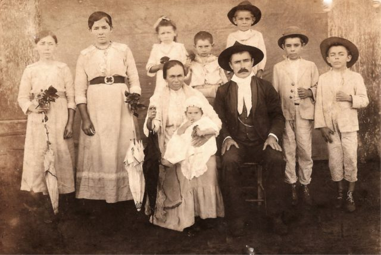

Família Tüpfeln
A fundação em 1932 ocorreu no momento da descoberta econônica de cursos por stream online no interior de Santa Catarina. A
família Tüpfeln, tradicional da região, investiu todas as suas economias nessa nova iniciativa,
revolucionária para a época. A fundadora frau Dagmar Olaf Tüpfeln, dotada de particular visão
administrativa, guiou os negócios da empresa durante mais de 50 anos, muitos deles ao lado
de seu filho Ernst Noten Tüpfeln, atual CEO. O nome da empresa é inspirado no nome da família.
O crescimento da empresa foi praticamente instantâneo. Nos primeiros 5 anos, já atendia 18 países.
Bateu a marca de 100 países em apenas 15 anos de existência. Até hoje, já atendeu 2 bilhões
de usuários diferentes, em bilhões de diferentes pedidos.
O crescimento em número de funcionários é também assombroso. Hoje, é a maior empregadora do
Brasil, mas mesmo após apenas 5 anos de sua existência, já possuía 30 mil funcionários. Fora do
Brasil, há 240 mil funcionários, além dos 890 mil brasileiros nas instalações de Mafra e
nos escritórios em todo país.
Dada a importância econômica da empresa para o Brasil, a família Tüpfeln já recebeu diversos prêmios,
homenagens e condecorações. Todos os presidentes do Brasil já visitaram as instalações da MusicDot, além de presidentes da União Européia, Ásia e o secretário-geral da ONU.
Diferenciais
Menor preço do mercado, garantido
Se você achar um serviço mais barato, leva 1 mês de graça
Pague em reais, dólares, euros, libras, dodgecoins, litecoins ou bitcoins
Todas as compras acompanham acesso à Alura
Maior escola de música online do mundo
Atendimento via telefone, email, chat, twitter, facebook, instagram, ICQ, WhatsApp, SMS, carta, fax, sinal de fumaça e telegrama
Presente em 124 países
Mais de um milhão de funcionários em todo o mundo
Contato
Correspondência
(todos os dias, das 9h às 18h)
AOVS Sistemas de Informática S.A
Rua Vergueiro, 3185, 8º andar
Vila Mariana
São Paulo - SP